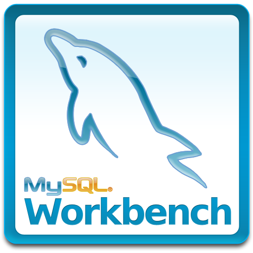

David Jiménez Sánchez
Profesional bilingüe con enfoque en análisis de datos, automatización de procesos, gestión de bases de datos y desarrollo de soluciones tecnológicas. Cuento con conocimientos en soporte técnico, redes, mantenimiento de equipos y desarrollo de software. Aplico habilidades en gestión administrativa y diseño, aportando una visión integral para optimizar procesos y comunicar resultados. Me destaco por mi compromiso, integridad, organización, creatividad, trabajo en equipo y aprendizaje continuo.
Analista de datos // Desarrollador BI
Como analista de datos, tengo habilidades en el manejo y gestión de Big Data utilizando herramientas y procesos ETL, lo que permite una visualización e interpretación más clara de la información. Tengo experiencia con herramientas como SQL Workbench, SQL Server, Python (Pandas, NumPy, Seaborn), KNIME, Excel, Power BI, Qliksense, Jenkins, PostgreSQL y Microsoft Access.
Workbench
Access
Python

Knime
Pentaho
Excel
PowerBI
Qliksense
Jenkins
Ver proyectos
Desarrollador de software // Fullstack
Como desarrollador Fullstack, me especializo en la creación de aplicaciones completas, tanto en el frontend como en el backend. Trabajo con tecnologías como Python, JavaScript, React, HTML y CSS, que me permiten desarrollar interfaces de usuario interactivas y dinámicas, así como construir la lógica y la base de datos que soportan dichas aplicaciones. Además, tengo conocimiento en la integración de bases de datos como PostgreSQL, lo que me permite desarrollar soluciones completas y eficientes. Mi enfoque está en la mejora continua, creando productos de software robustos y escalables a medida que aprendo más en mi carrera.
React

JavaScript

HTML

CSS
PostgreSQL
Ver proyectos
Diseñador // Freelance
Como diseñador freelance, tengo la capacidad de crear y modificar imágenes desde cero, así como diseñar plantillas UI/UX para proyectos de software o publicidad, utilizando diversas herramientas profesionales. Además, cuento con experiencia en la edición de videos y la aplicación de efectos especiales para enriquecer visualmente los proyectos. Aunque trabajo en proyectos personales, también integro mis conocimientos y habilidades de diseño en otras áreas de mi formación, asegurando soluciones creativas y funcionales.
Figma

Adobe Photoshop

Adobe premier
Shotcut
Inskcape
Canva

Ver proyectos
Técnico y gestor de redes
Soy técnico en gestión de redes y estoy adquiriendo experiencia en la optimización y mantenimiento de infraestructuras de red para asegurar un rendimiento eficiente y seguro. Tengo habilidades en configuración y administración de redes, así como en la resolución de problemas técnicos. He trabajado con herramientas y tecnologías clave como Cisco Packet Tracer, Juniper, Wireshark y Nagios.
Cisco Packet Tracer
Juniper
Wireshark
Nagios
Ver proyectos
Técnico y gestor de computadores
Soy técnico en gestión de redes y estoy adquiriendo experiencia en la optimización y mantenimiento de infraestructuras de red para asegurar un rendimiento eficiente y seguro. Tengo experiencia en configuración, administración y resolución de problemas de redes. He trabajado con herramientas y tecnologías clave como Cisco Packet Tracer, Juniper, Wireshark y Nagios.
Hiren’s Boot
CCleaner

CrystalDiskInfo
Ver proyectos
Asistente administrativo - Contable
He auditado y controlado procesos operativos clave, incluyendo servicio al cliente, modificaciones de facturas, visitas y ventas. Aseguro el cumplimiento de normativas internas y externas, adicional genero informes detallados para evaluación y mejora continua.
Word